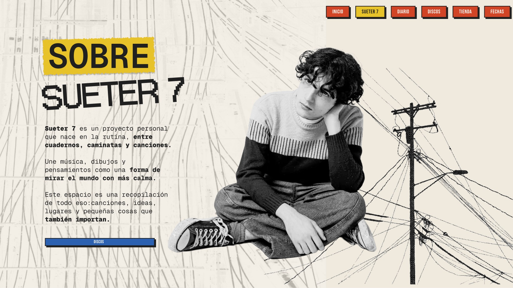
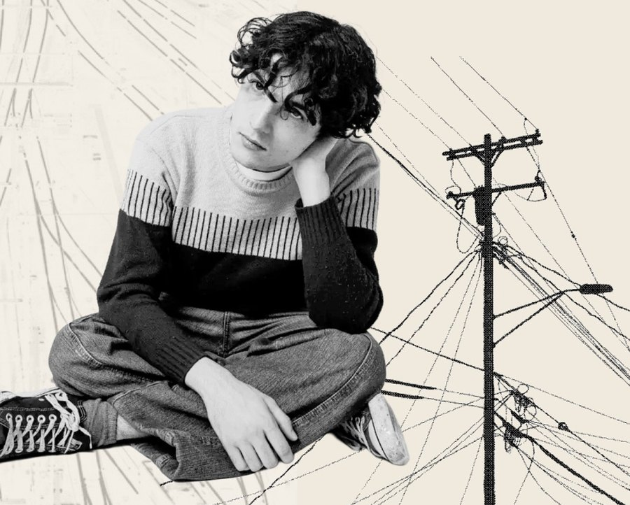

Tu versión Volver al andén
Sueter 7 es un proyecto personal que nace en la rutina, entre cuadernos, caminatas y canciones.
Une música, dibujos y pensamientos como una forma de mirar el mundo con más calma.
Este espacio es una recopilación de todo eso: canciones, ideas, lugares y pequeñas cosas que también importan.
Discos →